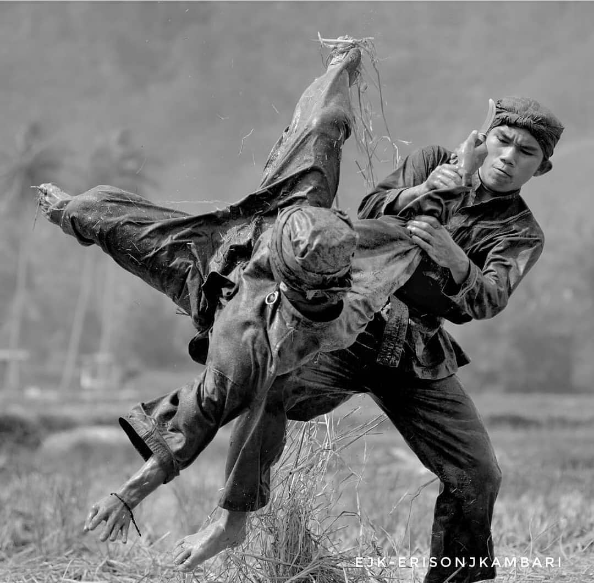
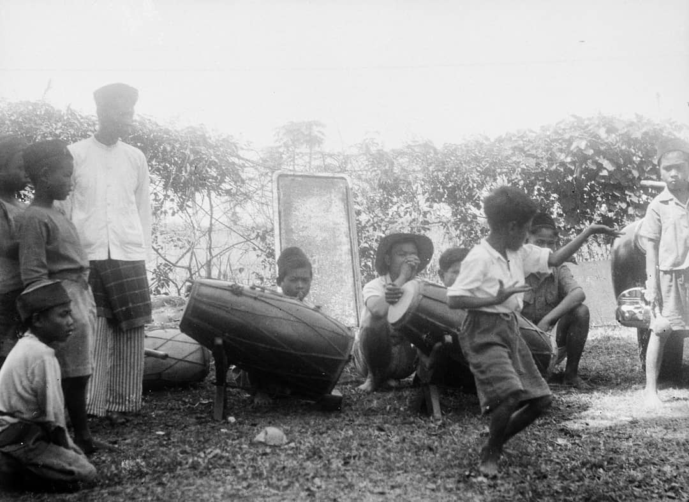
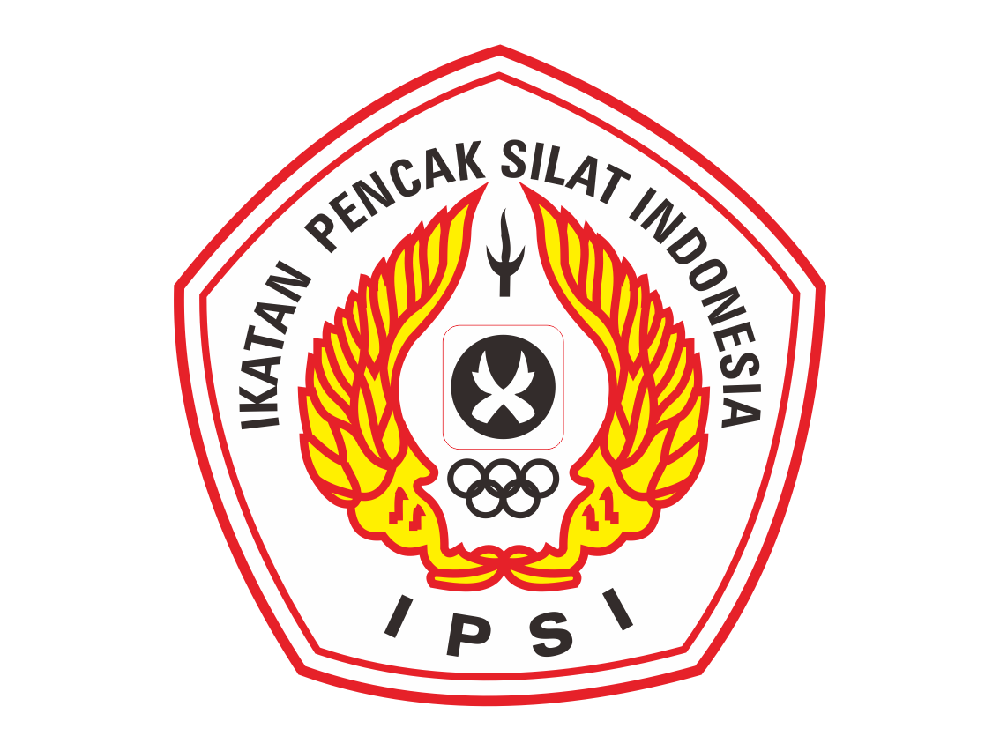
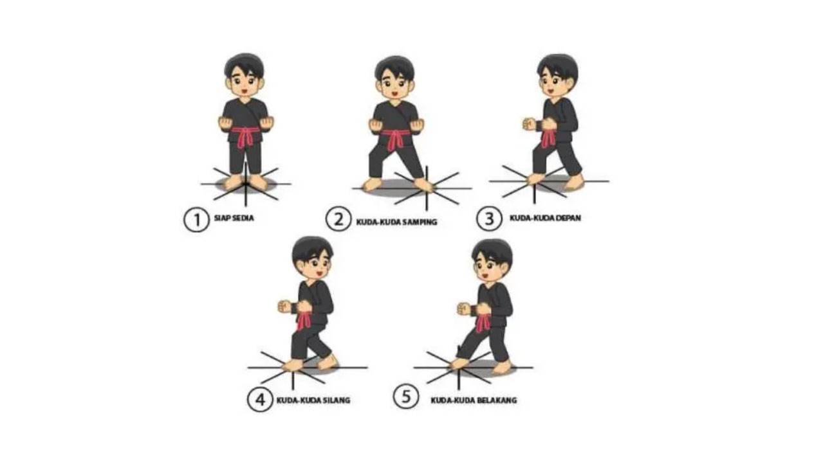

Pengertian Pencak Silat

Ada beberapa versi makna dari olahraga ini. Pencak silat memiliki arti dari dua kata yang menyusunnya yaitu
Pencak berarti gerak dasar bela diri yang memiliki peraturan dan silat memiliki arti gerakan bela diri
yang paripurna dan bersumber dari rohani
Versi kedua, menurut Thomas A. Green dalam bukunya yang berjudul Martial Arts of the World: An Encyclopedia of
History and Innovation Martial Arts of the World: An Encyclopedia of History and Innovation,
pencak lebih sering digunakan di Pulau Jawa bagian tengah dan timur. Sementara kata silat digunakan di Sumatera,
Semenanjung Malaya, dan Kalimantan.
Seiring perkembangannya, terbentuk definisi baru untuk olahraga ini. Masih menurut Green, pencak digunakan untuk
mengunggulkan unsur seni dan keindahan gerakan. Dan silat merupakan inti ajaran bela diri dalam sebuah pertarungan.
Sejarah Pencak Silat

Olahraga pencak silat merupakan seni bela diri tradisional asli produk Kepulauan Nusantara. Olahraga ini juga tersebar
dan dikenal luas di Asia Tenggara, seperti Malaysia, Brunei Darussalam, Singapura, Filipina Selatan, dan Thailand Selatan.
Dari sisi sejarah, olahraga pencak silat hampir mirip dengan olahraga renang. Ia ada lebih dulu sebelum dikonsep menjadi sebuah olahraga.
Mengapa demikian? Karena pencak silat dan renang merupakan satu aktivitas yang diperlukan untuk bertahan hidup dan menghadapi
tantangan alam. Keduanya ada karena mengikuti insting manusia. Adapun pencak silat yang saat ini kita kenal merupakan pengembangan
dari bela diri alami dari nenek moyang kita.
Begitupun nenek moyang Indonesia. Untuk keperluannya dalam menghadapi kondisi alam dan bertahan hidup, mereka mengambil inspirasi bela diri
dari gerakan binatang yang ada di dekat mereka. Sebut saja gerakan kera, harimau, burung elang, dan ular. Namun, tidak menutup kemungkinan
juga inspirasi tersebut didapatkan untuk keperluan berburu dan berperang.
Seorang ilmuwan sekaligus ahli beladiri asal Jepang, Donald Frederick “Donn” Draeger, menyebutkan bahwa bukti seni bela diri sudah
ada sejak jaman Hindu-Budha di Kepulauan Nusantara dapat ditemukan pada artefak-artefak senjata.
Tidak hanya itu, ditemukan pahatan relief-relief di Candi Prambanan dan Candi Borobudur yang menggambarkan posisi kuda-kuda silat.
Dalam bukunya yang berjudul Weapons and fighting arts of Indonesia, Draeger menyebutkan, bagi nenek moyang Indonesia, bela diri
silat dan senjata memiliki kaitan yang sangat erat. Pasalnya, selain untuk keperluan olah tubuh, keduanya memiliki arti spiritual
yang tertanam dalam kebudayaan Indonesia.
Menurut referensi lainnya, pencak silat juga mendapatkan pengaruh dari bela diri China dan India. dan beberapa negara lainnya.
Hal ini bisa dimaklumi juga karena Indonesia merupakan tempat yang strategis sebab sering menjadi tujuan dari saudagar-saudagar internasional.
Atas dasar kebutuhan yang telah kita sebutkan di atas, tradisi pencak silat tersebar dari mulut ke mulut. Terlebih setiap daerah memiliki
pendekar-pendekar kebanggan, seperti Datuk Suri Diraja dari Sumatera Barat, Prabu Siliwangi di tanah Sunda, Hang Tuah yang menjadi
Panglima Malaka, Gajah Mada yang merupakan mahapatih Kerajaan Majapahit, Si Pitung di Betawi.
Tidak hanya itu, tersebarnya cerita-cerita heroik para pahlawan kemerdekaan yang mengangkat senjata melawan penjajah seperti Tuanku Imam Bonjol,
Pangeran DIponegoro, Sultan Agung Hanyokrokusumo, Cut Nyak Dhien, Cut Meuthia, dan lainnya turut andil dalam mendorong rakyat Indonesia untuk
mencari tahu tentang pencak silat. Hal ini mendorong pencak silat masuk ke dalam kurikulum pendidikan bela negara yang diajarkan
ke rakyat Indonesia secara luas untuk melawan penjajah.
Organisasi yang Menaungi Pencak Silat

Tersebarnya pendekar di banyak daerah membuat beberapa di antara mereka berkumpul dan bermusyawarah. Dan pada 18 Mei 1948, para pendekar tersebut
sepakat untuk mendirikan sebuah lembaga yang bernama Ikatan Pencak SIlat Seluruh Indonesia (IPSSI). Kemudian organisasi tersebut berganti nama
menjadi Ikatan Pencak Silat Indonesia (IPSI). Dengan demikian, IPSI merupakan organisasi pencak silat tertua di dunia.
Kemudian pada tahun 1980, pesilat dari Indonesia, Malaysia, Brunei Darussalam, Singapura berkumpul dan bersepakat atas berdirinya Persatuan Pencak
Silat Antarbangsa (Persilat). Alhasil, keempat negara tersebut didaulat menjadi pendiri Persilat.
Tidak hanya di Indonesia, di negara-negara lain juga terdapat organisasi pencak silat. Persekutuan Silat Singapore (PERSIS), Persekutuan Silat
Kebangsaan Malaysia (PESAKA), dan Persekutuan Silat Brunei Darussalam. Kini sudah mulai lahir perguruan silat di Eropa dan Amerika. Tentunya,
masing-masing memiliki induk organisasi masing-masing.
Pencak silat mulai dipertandingkan dalam Pekan Olahraga Nasional (PON) pada tahun 1975. Pada tanggal 13 Desember 2019, Unesco menetapkan pencak silat
sebagai salah satu Intangible Cultural World Heritage (Warisan Non Benda Dunia).
Teknik Dasar Pencak Silat
Anda bisa menjadikan pencak silat ini sebagai pilihan olahraga bela diri Anda, bukan hanya untuk menjaga kebugaran tubuh saja, melainkan
juga karena olahraga ini cukup menantang dan banyak sekali filosofi-filosofi hidup yang diajarkan didalamnya. Untuk bisa menguasai seni
bela diri ini, Anda harus mengetahui terlebih dulu beberapa teknik dasar pencak silat berikut ini.
1. Teknik Kuda-kuda

Kuda-kuda adalah teknik yang memperlihatkan sikap dari kedua kaki dalam keadaan statis. Dalam pencak silat, kuda-kuda menjadi tumpuan untuk
melakukan sikap pasang, teknik serangan, dan pembelaan diri. Teknik ini juga digunakan sebagai latihan dasar dalam pencak silat untuk
memperkuat otot kaki.
Ditinjau dari bentuknya, teknik kuda-kuda terbagi dalam kuda-kuda ringan, kuda-kuda sedang, dan kuda-kuda berat. Sementara dari bobot tumpuannya,
teknik ini terbagi dalam kuda-kuda depan, kuda-kuda belakang, kuda-kuda tengah, dan kuda-kuda samping.
2. Teknik Sikap Pasang

Sikap pasang adalah kombinasi sikap tangan dan kaki, baik dengan maupun tanpa kuda-kuda, yang disertai dengan kesiagaan mental dan indera
secara total. Hal ini karena sikap pasang merupakan awalan untuk melakukan serangan atau belaan.
Ada dua jenis sikap pasang, yakni sikap pasang terbuka dan tertutup. Sikap pasang terbuka dengan tangan dan lengan tidak melindungi tubuh,
sebaliknya sikap pasang tertutup dengan tangan dan lengan yang melindungi tubuh. Selain itu, ada berbagai macam sikap pasang yang dilakukan
dalam posisi kuda-kuda, berdiri, hingga duduk. Untuk menguasainya, Anda perlu meminta bantuan pelatih untuk mempelajarinya satu per satu.
3. Teknik Arah atau Delapan Penjuru Mata Angin

Teknik dasar pencak silat yang perlu Anda pahami berikutnya adalah arah. Anda sangat memerlukan pemahaman mengenai arah dalam pembentukan gerakan,
baik saat menyerang maupun bertahan. Arah yang harus Anda pahami adalah arah delapan penjuru mata angin, yakni sikap atau pola langkah dalam
gerakan dasar pencak silat dengan titik tumpu berada di tengah.
4. Teknik Pola Langkah

Setelah menguasai kuda-kuda dan arah, selanjutnya Anda perlu mempelajari teknik pola langkah. Langkah menjadi ciri khas dalam bela diri
pencak silat, yang mana teknik ini perlu dilakukan dengan baik dan benar. Secara umum, pola langkah pencak silat dapat dibagi ke dalam
langkah lurus, langkah samping, langkah serong, langkah silang, langkah pilin, dan langkah putar.
Saat melakukan langkahan untuk berpindah posisi, Anda juga bisa menguasai beberapa teknik, seperti langkah angkatan,
langkah geser, langkah seser, dan langkah lompat.
5. Teknik Pukulan

Pukulan adalah teknik dasar pencak silat yang Anda perlu kuasai selanjutnya. Kedua tangan dan lengan Anda berfungsi sebagai alat untuk
menyerang lawan dalam olahraga bela diri ini. Ada beberapa teknik serangan dasar yang bisa dipelajari, seperti pukulan depan,
pukulan samping, pukulan sangkol (pukulan bandul), dan pukulan lingkar. Selain menguasai teknik gerakannya, Anda juga bisa memperkuat
pukulan dengan melakukan latihan kekuatan dan membangun otot lengan
6. Teknik Tendangan

Teknik tendangan merupakan sebuah teknik yang digunakan untuk menyerang lawan dengan menggunakan kaki. Namun demikian,
tidak jarang tendangan digunakan untuk bertahan dari serangan musuh. Terdapat beberapa teknik serangan kaki dengan cara menendang,
seperti tendangan lurus, tendangan tusuk, tendangan jejag, tendangan T, tendangan celorong, tendangan sabit, tendangan belakang, dan variasi lainnya.
7. Teknik Tangkisan

Pencak silat juga memiliki gerakan bertahan atau belaan sama halnya seperti olahraga bela diri lainnya, salah satunya tangkisan.
Tangkisan merupakan teknik belaan dengan melakukan kontak langsung dengan bagian tubuh lawan yang melakukan serangan.
Gerakan tangkisan bertujuan untuk menahan atau memindahkan serangan lawan. Tangkisan bisa menggunakan kombinasi gerakan tangan,
lengan, siku, dan kaki. Beberapa teknik tangkisan, seperti tangkisan tepis, tangkisan gedik, tangkisan siku, tangkisan lutut,
tangkisan jepit, dan tangkisan potong bisa dilakukan bersama rekan atau pelatih yang melakukan serangan pada Anda.
8. Teknik Guntingan

Setelah menyerang dan bertahan, selanjutnya Anda perlu untuk melumpuhkan gerakan lawan. Guntingan merupakan teknik untuk menjatuhkan lawan
dengan menjepitkan kedua kaki pada sasaran, seperti leher, pinggang, atau kaki hingga lawan terjatuh. Teknik sangat membutuhkan kecepatan dan keakuratan
gerakan kaki. Pemula disarankan untuk berlatih teknik ini bersama ahli untuk menghindari risiko cedera.
9. Teknik Kuncian

Sesuai dengan namanya, kuncian adalah teknik dasar dalam bela diri pencak silat untuk mengunci, menguasai, dan membuat lawan tidak berdaya.
Anda bisa menggunakan kombinasi tangan, kaki, atau anggota badan lain untuk melakukan kuncian. Kuncian umumnya melibatkan beberapa gerakan dasar,
yakni hindaran dan tangkapan untuk mengincar bagian tubuh lawan, seperti pergelangan tangan, lengan, leher, dan bahu.
Perguruan Pencak Silat
Berikut adalah 4 Perguruan Pencak Silat di Indonesia yang berkembang sangat pesat dan mempunyai anggota terbanyak dari Perguruan
Pencak Silat lain.
Cek Kecocokan
Sebagai Generasi Penerus Bangsa yang mencintai budayanya, silahkan cek apakah kamu cocok atau tidak untuk belajar
pencak silat di salah satu dari 4 Perguruan Besar yang ada di Indonesia.